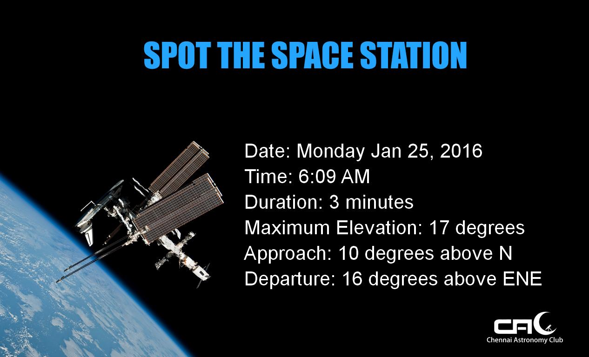

fly
fly is an automated flyer/poster maker that works on Python and PIL.
Requirements
- PIL
- Microsoft core fonts(if using Linux). Use
sudo apt-get install ttf-mscorefonts-installer.
Installation
git clone https://github.com/ChennaiAstronomyClub/fly
cd into the fly directory and do
python setup.py install
Usage
import fly
flyer = fly.ISS()
flyer.fly("Message Here")
Sample

Functionality will be extended in the coming days to cover all our events. The following are the targets that are aimed to be covered.
- [x] ISS passes with mercury
- [ ] Star Party invites
- [ ] Rocket Launch invites
- [ ] Monthly Meetup invites
- [ ] Outreach posters
License
MIT © Chennai Astronomy Club